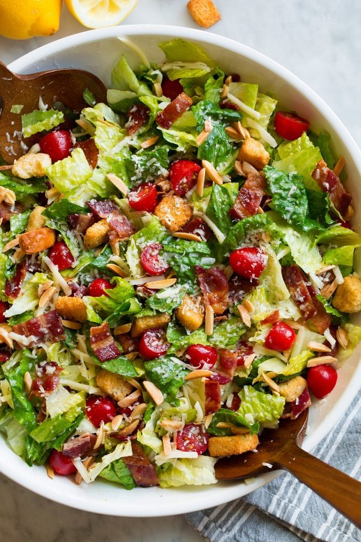

The delightful family salad recipe! Mucho bueno!

Description:
Here's a recipe for a family salad I found at https://www.cookingclassy.com/best-salad/.
It looked like my kind of salad so I'm putting it on here.
Ingredients:
For the Salad:
- Slivered Almonds
- Bacon
- Large Romaine Hearts
- Grape Tomatoes
- Swiss and Parmesan Cheese
- Croutons
For the Dressing:
- Light olive oil
- Lemon Juice
- Garlic
- Dijon Mustard
- Honey
- Salt and Pepper
Steps:
- Make the dressing, chill: Add olive oil,
lemon juice, garlic, dijon,
and honey to a jar. Add salt
and pepper. Cover and seal with lid,
shake to blend. If needed stir up honey
if it sticks to bottom of jar. Chill in
refrigerator while you prepare the remainder.
- Toast almonds: Preheat oven to 350 degrees. Spread almonds into an even layer on a small baking sheet. Bake in preheated oven until just lightly golden brown, about 6 – 10 minutes, tossing once halfway through toasting. Remove from oven, set aside to cool.
- Cook Bacon:Increase oven temperature to 400 degrees. Line a rimmed 18 by 13-inch baking sheet with aluminum foil. Place bacon strips on baking sheet in a single layer. Bake in preheated oven until browned and nearly crisp (they’ll should crisp up fully once cooled), about 13 – 18 minutes (time will vary based on thickness of bacon).
- Drain excess fat:Transfer bacon to a plate lined with paper towels and let cool. Once cool chop bacon into small pieces.
- Prepare lettuce:Rinse lettuce under cold water and run through a salad spinner in batches to dry well. Add lettuce to a large serving bowl.
- Toss salad ingredients:Add in almonds, bacon, tomatoes, Swiss cheese, and parmesan cheese. Shake dressing again then pour over salad, toss salad then add croutons and toss again. Serve immediately.
Bon Appetit!